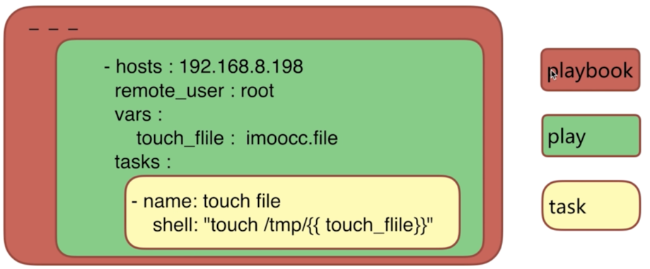
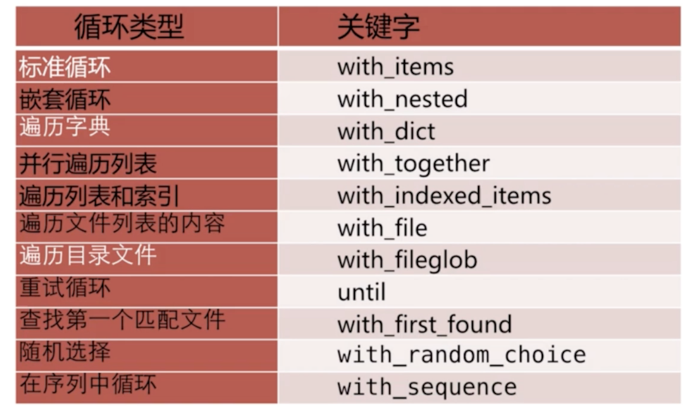
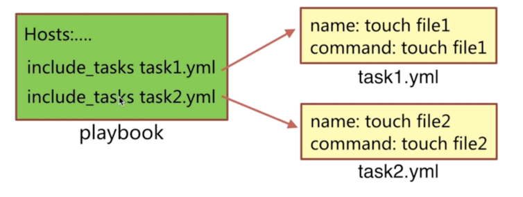
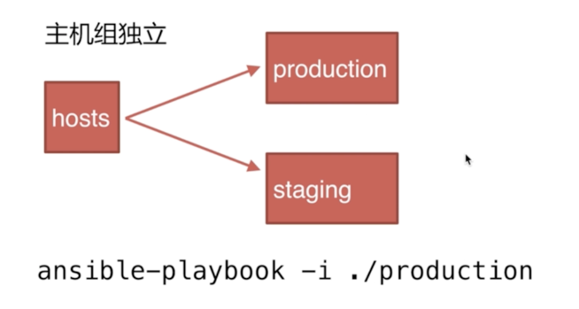

ansible_playbook模式
什么是playbook及组成#
定义#
playbook: 翻译过来就是‘剧本’
组成#
play： 定义的是主机的角色
task: 定义的是具体执行的任务
playbook： 有一个或者多个play组成，一个play可以包含多个task

playbook的优势#
功能比adhoc模式更全
控制好依赖
展示更直观
持久使用
playbook的配置语法#
1. 基本使用（执行命令）#
执行命令方式:
ansible-playbook playbook.yml [options]
options参数说明：
| 参数 | 说明 |
|---|---|
| -u REMOTE_USER, --user=REMOTE_USER | ssh 连接的用户名 |
| -k, --ask-pass | ssh登录认证密码 |
| -s, --sudo | ＃sudo 到root用户，相当于Linux系统下的sudo命令 -U SUDO_USER, --sudo-user=SUDO_USER ＃sudo 到对应的用户 |
| -K, --ask-sudo-pass | ＃用户的密码（—sudo时使用） |
| -T TIMEOUT, --timeout=TIMEOUT | ＃ ssh 连接超时，默认 10 秒 |
| -C, --check | ＃ 指定该参数后，执行 playbook 文件不会真正去执行，而是模拟执行一遍，然后输出本次执行会对远程主机造成的修改 |
| -e EXTRA_VARS, --extra-vars=EXTRA_VARS | ＃ 设置额外的变量如：key=value 形式 或者 YAML or JSON，以空格分隔变量，或用多个-e |
| -f FORKS, --forks=FORKS | ＃ 进程并发处理，默认 5 |
| -i INVENTORY, --inventory-file=INVENTORY | ＃ 指定 hosts 文件路径，默认 default=/etc/ansible/hosts |
| -l SUBSET, --limit=SUBSET | ＃ 指定一个 pattern，对- hosts:匹配到的主机再过滤一次 |
| --list-hosts | ＃ 只打印有哪些主机会执行这个 playbook 文件，不是实际执行该 playbook |
| --list-tasks | ＃ 列出该 playbook 中会被执行的 task |
| --private-key=PRIVATE_KEY_FILE | ＃ 私钥路径 |
| --step | ＃ 同一时间只执行一个 task，每个 task 执行前都会提示确认一遍 |
| --syntax-check | ＃ 只检测 playbook 文件语法是否有问题，不会执行该 playbook |
| -t TAGS, --tags=TAGS | ＃当 play 和 task 的 tag 为该参数指定的值时才执行，多个 tag 以逗号分隔 |
| --skip-tags=SKIP_TAGS | ＃ 当 play 和 task 的 tag 不匹配该参数指定的值时，才执行 |
| -v, --verbose | ＃输出更详细的执行过程信息，-vvv可得到所有执行过程信息。 |
2.剧本中yaml文件配置和执行#
yaml文件配置：#
--- - hosts : 192.168.199.214 remote_user : ywf vars : touch_file : test.file tasks : - name : touch file shell : 'touch /tmp/{{touch_file}}'
playbook执行：#
ansible-playbook -i /etc/ansible/hosts --list-hosts ./f1.yml ansible-playbook ./f1.yml
剧本中变量的定义#
1. yaml文件中定义变量赋值#
--- - hosts : 192.168.199.214 remote_user : ywf vars : # 文件中通过vars定义变量 touch_file : test.file tasks : - name : touch file shell : 'touch /tmp/{{touch_file}}'
2. --extra-vars执行参数赋值给变量#
ansible-playbook ./f1.yml --extra-vars 'touch_file=jeson2'
3. 注册变量#
register 关键字可以存储指定命令的输出结果到一个自定义的变量中
格式：
- name: get time command: date # 通过date输出时间 register: date_output # 通过register来获取并记录date输出的时间
案例演示：
剧本的配置：
--- - hosts : 192.168.199.214 remote_user : ywf vars : touch_file : imoocc.file tasks : - name : get date command : date register : date_output - name : touch file shell : 'touch /tmp/{{touch_file}}' - name : echo date_output shell : 'echo {{date_output.stdout}} > /tmp/{{touch_file}}'
剧本执行：
ansible-playbook ./f2.yml
剧本中条件判断#
条件判断语句
when语句
使用演练：
- hosts : 192.168.199.214 remote_user : ywf vars : touch_file : id_rsa tasks : - name : touch flag file command : 'touch /tmp/this_is_{{ansible_distribution}}_system' when : ansible_distribution == 'CentOS'
剧本中循环语句#
循环语句类型分类#

标准循环#
- hosts : 192.168.199.214 remote_user : ywf tasks : - name: add serveral users user: name={{ item.name }} state=present groups={{ item.groups }} with_items: - { name: 'testuser1', groups: 'ywf' } - { name: 'testuser2', groups: 'ywf' }
遍历字典#
- hosts : 192.168.199.214 remote_user : ywf tasks : - name: add serveral users user: name={{ item.key }} state=present groups={{ item.value }} with_items: - { 'testuser3': 'wheel', 'testuser4' : 'wheel'}
遍历目录文件#
- hosts : 192.168.199.214 remote_user : ywf tasks : - name: copy files copy: src={{ item }} dest=/tmp/bb owner=ywf mode=600 with_fileglob: - aa/*
剧本中条件和循环结合语句#
- hosts : 192.168.199.214 remote_user : ywf tasks : - name: winner debug: msg='{{item.key}} is the winner {{item.value}}' with_dict: - {'test': {'englist' : 60}} - {'test1': {'englist' : 80}} when : item.value.englist > 60
剧本中异常处理#
忽略错误#
- hosts : 192.168.199.214
remote_user : ywf
tasks :
- name: ignore false
command: /bin/false
ignore_errors: yes # 忽略错误，进行往下执行
自定义错误#
- hosts : 192.168.199.214 remote_user : ywf vars: tasks : - name: get process shell: ps -ef|wc -l register: process_count failed_when: "'FAILED' in process_count > 3" - name: echo errors debug: msg='{{ process_count }}'
剧本中include用法#
include 用法：
include_tasks/include:动态的包含tasks任务列表执行

- hosts : 192.168.199.214
remote_user : ywf
vars:
tasks :
- include_tasks: touchf1.yml
- include_tasks: touchf2.yml
定义roles剧本#
什么是roles#
是一种利用在大型playbook中的剧本配置模式，有这自己特定结构
为什么需要用到roles#
和面向对象开发思想相似
利用大型的项目任务中，尽可能的将公共的任务，变量等内容独立
剧本roles 设计思路#
ansible
官方网站的建议roles剧本结构如下：#
production # 正式环境的inventory文件
staging #测试环境用得inventory文件
group_vars/ # 机器组的变量文件
group1
group2
host_vars/ #执行机器成员的变量
hostname1
hostname2
webservers.yml
roles/
webservers/
tasks/
main.yml
handlers/
main.yml
vars/
main.yml
common/
tasks/
main.yml
handlers/
main.yml
vars/
main.yml